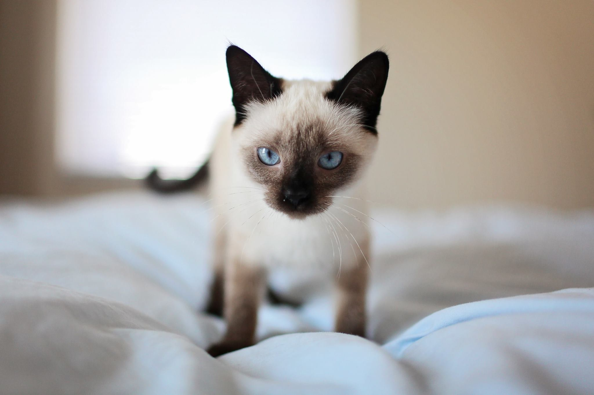
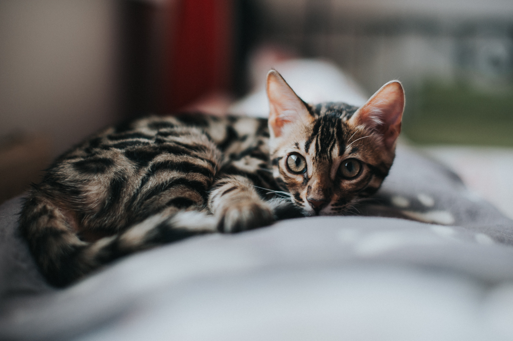
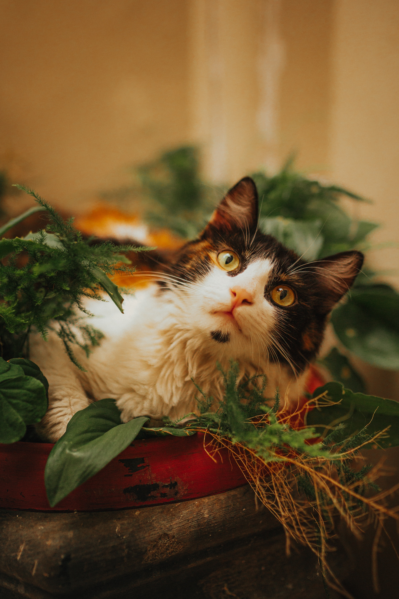

Raças
Siamês
Os gatos siameses são conhecidos por sua aparência distinta, com pelagem de cor clara e olhos azuis intensos. São gatos sociáveis, vocalizadores e muito afetuosos com seus donos.
Maine Coon
Os Maine Coons são uma das maiores raças de gatos domésticos. Têm pelagem longa e densa, além de um temperamento gentil e amigável. São conhecidos por suas orelhas grandes e caudas peludas.

Persa
Os gatos persas são famosos por suas pelagens longas e exuberantes, além de seus rostos achatados. São gatos tranquilos e carinhosos, geralmente preferem um ambiente calmo.

Bengal
Os gatos bengal têm pelagem com padrões semelhantes aos de leopardos, o que lhes confere uma aparência selvagem. São ativos e brincalhões, requerendo estimulação mental e física.
Ragdoll
Os Ragdolls são gatos grandes e dóceis, conhecidos por relaxar completamente quando são pegos, como se fossem "bonecas de pano" (daí o nome). São extremamente afetuosos e sociáveis.
Sphynx
A raça Sphynx é famosa por sua falta de pelos, o que lhes dá uma aparência única. São gatos ativos, necessitando de cuidados especiais com a pele devido à ausência de pelagem.
British Shorthair
Os gatos British Shorthair são conhecidos por sua pelagem curta e densa, além de suas faces arredondadas. São gatos calmos e tranquilos, ideais para famílias que buscam um animal de estimação relaxado.